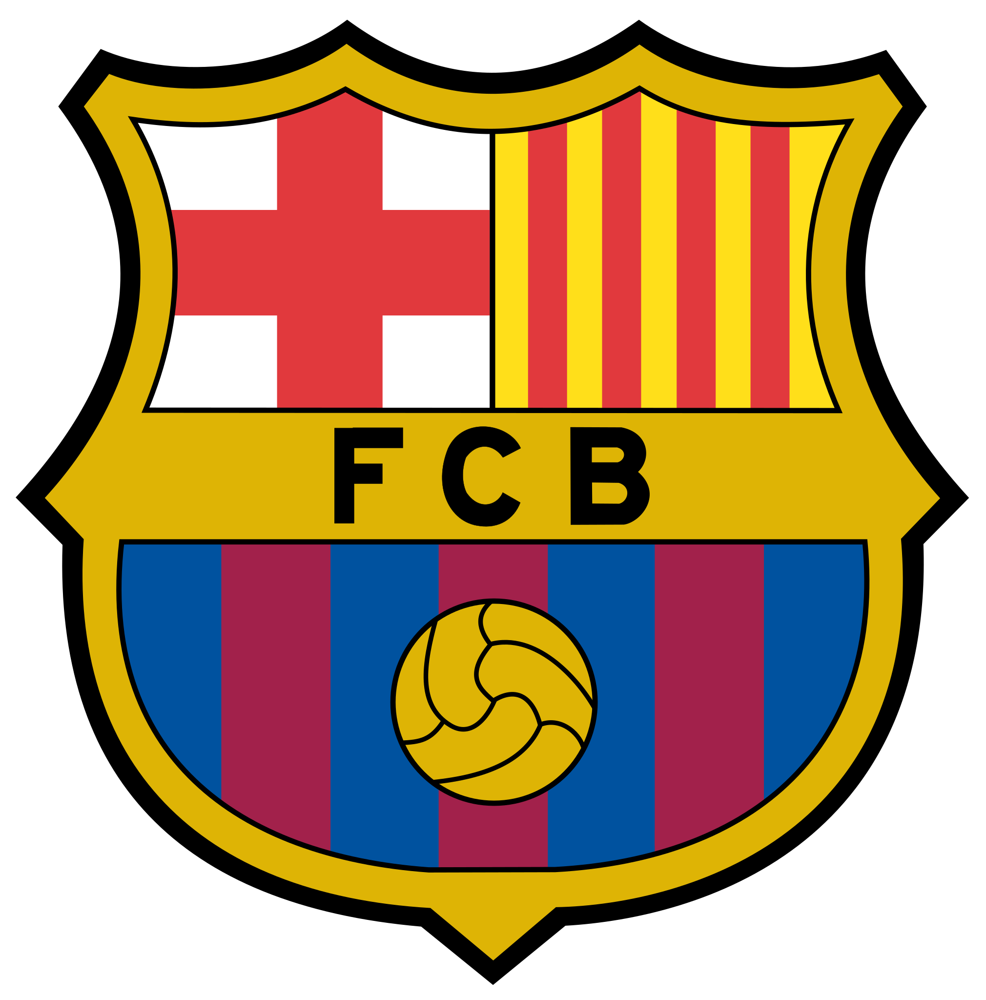

Cruzeiro
Sou cruzeirense desde sempre, graças ao meu pai, que me ensinou a torcer pelo Cruzeiro. Mas daí em diante meu amor pelo clube cresceu cada vez mais, acompanhei inúmeros títulos do Cruzeiro como o bicampeonato brasileiro de 2013 e 2014, e também o bicampeonato da Copa do Brasil de 2017 e 2018 entre outros títulos de Campeonato Mineiro. Também tive o prazer de acompanhar jogos incríveis do Cruzeiro como o inesquecível 6×1 contra um Atlético Mineiro, o 2×1 contra o Flamengo pela Copa do Brasil em 2013, dentre outros jogos memoráveis.
Futebol
Desde sempre fui muito apaixonado por futebol, tanto assistir quanto jogar, e isso me levou aos meus times do coração.
Barcelona
Meu amor pelo Barcelona surgiu próximo do ano de 2012, quando o Barcelona tinha um time incrível, e tinha ele LIONEL MESSI, foi graças ao Messi que me tornei torcedor culé, desde então acompanho e torço pelo Barcelona. Lembro bem de assistir o time de 2014/2015 com o trio MSN jogando a Champions League sempre que chegava da escola, assisti todos os jogos do time até a conquista do título e não me esqueço do gol do Neymar no último lance do jogo, com a inesquecível narração do André Henning. Outro jogo memorável é o 6×1 contra o PSG pela Champions League de 2017, me arrepio sempre que vejo o lance do último gol.
